犬の散歩 × 天気 × 路面温度
散歩の前に、
路面の温度を。
気温25℃の晴れの日、アスファルトは約52℃。肉球が1分でやけどする温度です。Paw Weather は天気予報から路面の温度を推定して、散歩に出る前に「安全・注意・危険」をひとことで伝えます。
iPhone 用 · 日本語・英語 · アカウント登録なし
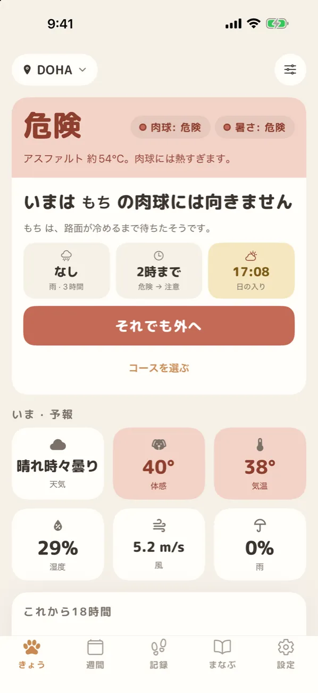
早見
犬の散歩、何度から危ない？
アプリの「まなぶ」の記事と、判定に使っているしきい値から抜き出しました。平均的な成犬の目安です。
この温度の面に約60秒触れ続けると、皮膚が傷みます。Paw Weather はここから「危険」、43℃から「注意」。
公表されている実測。30℃で約57℃、31℃で約62℃。コンクリートは低めでも、真夏はやけどする温度になります。
熱指数は気温と湿度から出す体感の温度。短頭種・子犬・シニア犬・黒い毛の犬はさらに厳しく判定します。
路面は夜のあいだに冷めます。日没後のアスファルトは、約3.7時間たっても気温より平均約4℃高いまま。
7秒ルール — 手の甲を路面に7秒。
熱くてがまんできなければ、犬の肉球にも熱すぎます。肉球がやけどする温度は、人の皮膚とほぼ同じだからです。
アプリの路面温度は推定です。舗装の古さ・色・風・日が当たり続けた時間で、実際の温度は5℃以上動きます。最後は手で確かめてください。
画面
判定から、散歩の記録と思い出まで。
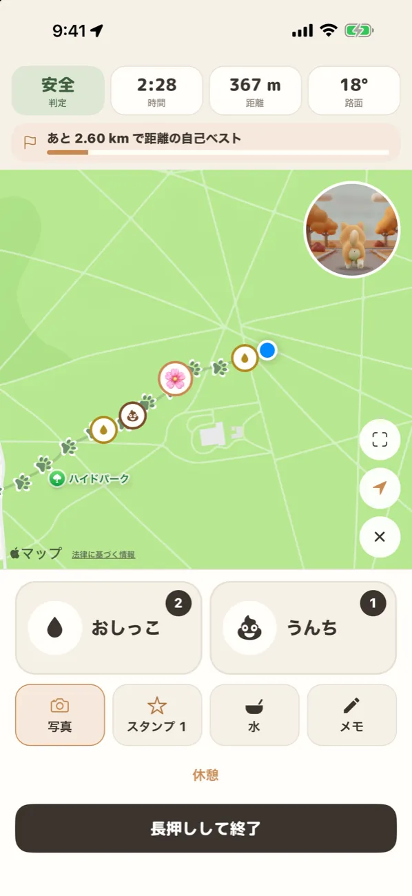
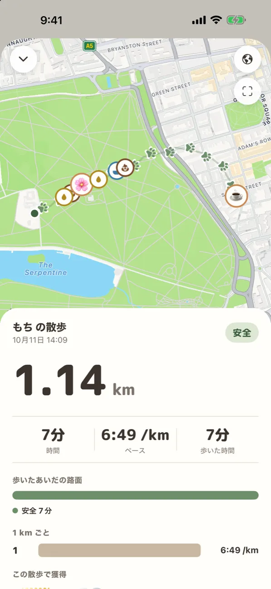
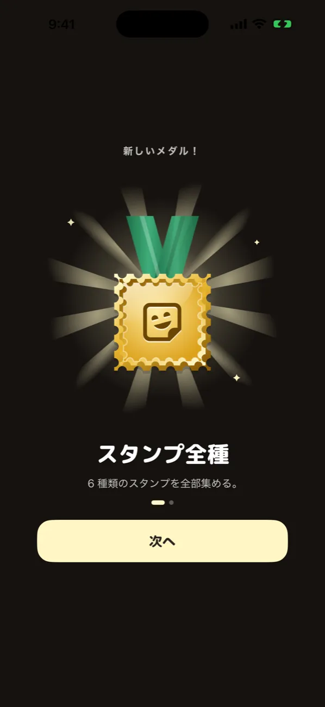
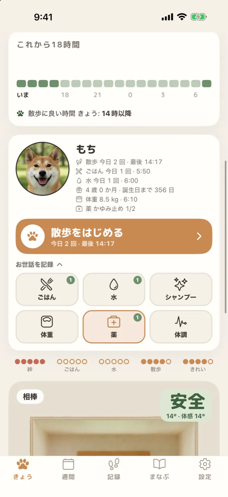
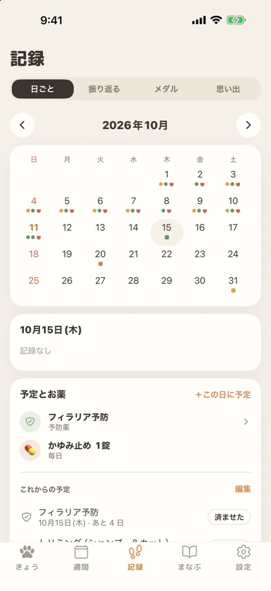
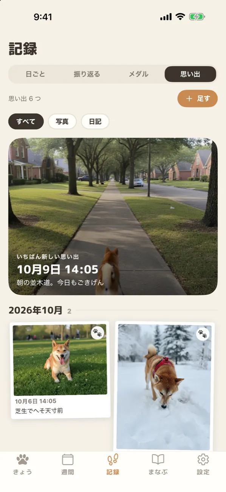
← 横に送れます →
折りたたみの iPhone
iPhone Duo では、開くと左に詳しい中身。1.5.4 から
閉じているときは、いつもの画面。開くと、右は閉じた画面のまま、左に「これから18時間」や「この先60分の雨」など詳しい中身が並びます。散歩中の地図は、柱のサイドバーから大きく1つに広げられます。

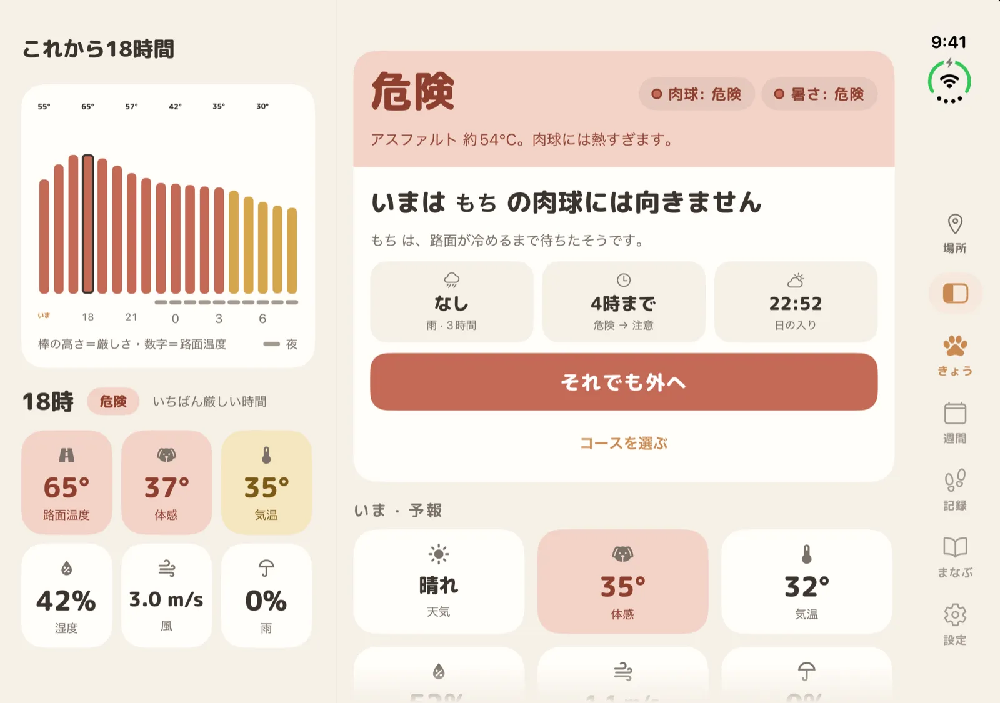
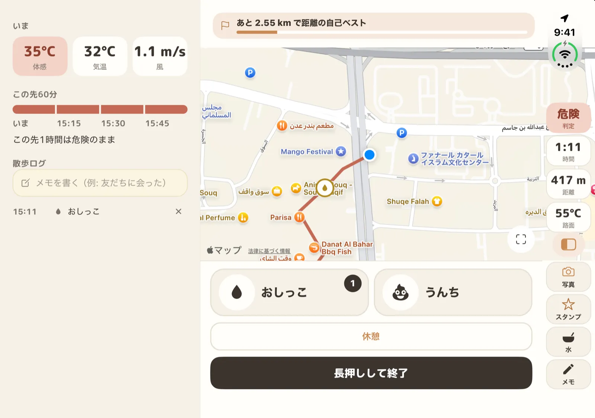
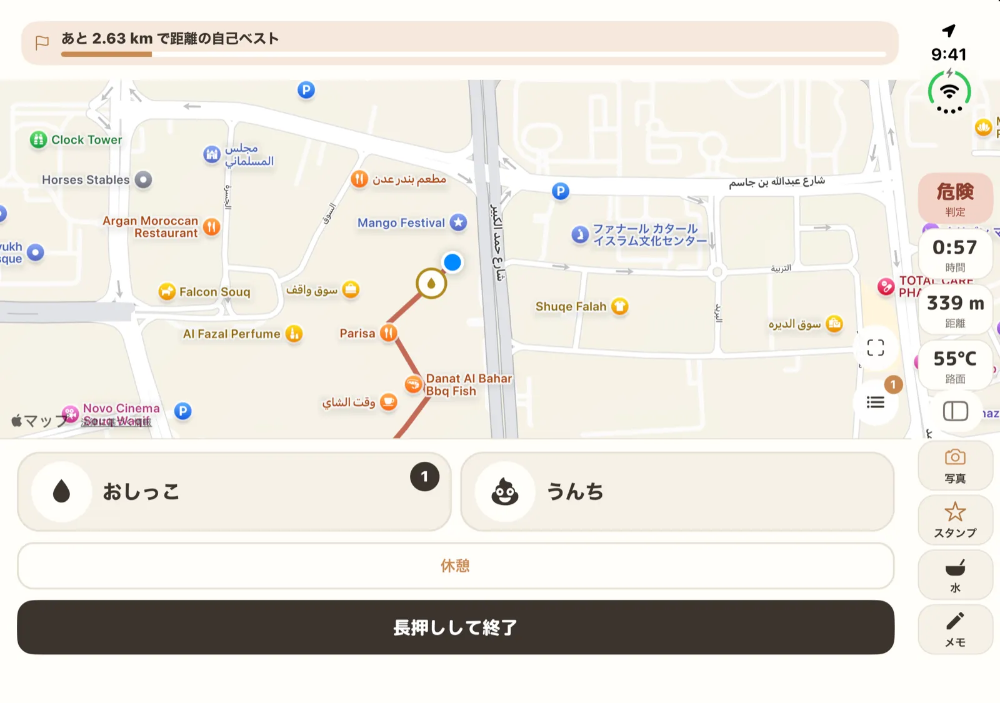
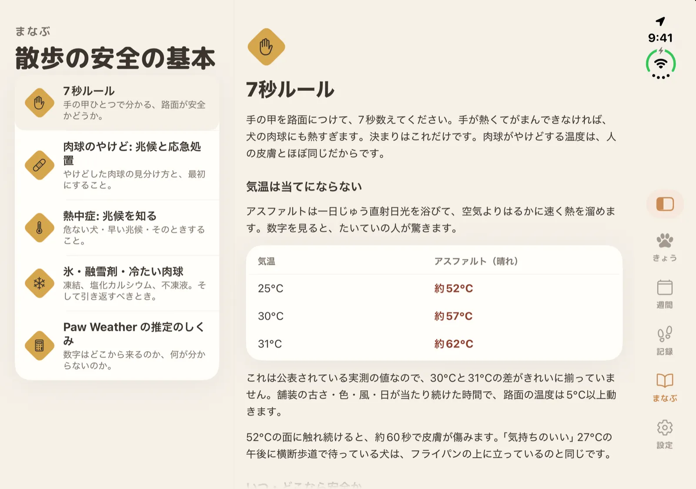
判定のしくみ
2つの危険を、別々に。
肉球（路面の温度）と体（熱中症）は、危ない理由が違います。Paw Weather は2つを別々に判定して、悪いほうを出します。だから「なぜ危ないか」が分かります。
| 見るもの | 注意 | 危険 |
|---|---|---|
| 肉球 — 路面の推定温度 | 43℃〜 | 52℃〜 |
| 体 — 熱指数（気温＋湿度） | 27℃〜 | 32℃〜 |
| 気温そのもの | — | 38℃〜 |
子犬は肉球が薄いので路面を約3℃厳しく。熱中症は短頭種で約3℃、子犬とシニア犬で約2℃、直射日光の下の黒い毛で約2℃厳しくなります（合わせて最大約6℃）。
冬は、凍結と融雪剤と寒さ
晴れて風のない夜は、気温が0℃より上でも日陰の路面が先に凍ります。体感（風冷指数）が0℃を下回ると「注意」、−9℃を下回ると「危険」。小型犬・短毛・子犬・シニア犬は厳しく、ダブルコートの犬は余裕を持たせて判定します。
天気はどこから？
日本を含む米国以外はノルウェー気象研究所（MET Norway）、米国内は米国気象局（NWS）の予報です。散歩中の「この先60分の雨」は Apple Weather のデータです。路面の温度は、太陽の高さ・雲・路面が溜めた熱から計算した推定です。
できること
Paw Weather でできること
路面温度と判定
アスファルトとコンクリートの推定温度。肉球と暑さを別々に判定。
これから18時間
時間ごとの棒で、散歩に良い時間がひと目で分かります。
冬の注意
凍結・融雪剤が撒かれる条件・凍傷の危険。帰ったら足を拭く合図も。
その子に合わせた判定
犬種・年齢・毛の色と厚さで、しきい値が動きます。
散歩とお世話の記録
経路・おしっこ・うんち・写真、ごはん・水・体重・薬・体調。
この先60分の雨1.5.4 から
散歩中だけ、Apple Weather の分ごとの雨を表示。
iCloud で引き継ぎ1.5.4 から
同じ Apple アカウントの新しい iPhone に、記録と写真が移ります。
まなぶ
7秒ルール・肉球のやけど・熱中症・冬の散歩の記事。
7日先の散歩の計画や、朝の通知などは Paw Weather Pro（App 内課金）の機能です。内容はアプリと App Store でご確認ください。
よくある質問
犬の散歩と暑さ・寒さの Q&A
犬の散歩は、路面が何度から危ないですか？
路面が約52℃を超えると、約60秒の接触で肉球の皮膚が傷みます。Paw Weather は平均的な成犬で、路面43℃から「注意」、52℃から「危険」と判定します。子犬は肉球が薄いので、約3℃厳しく判定します。
気温が何度なら、アスファルトは熱すぎますか？
公表されている実測では、晴れの日に気温25℃でアスファルトは約52℃、30℃で約57℃、31℃で約62℃になります。気温が低めでも、日なたのアスファルトは肉球には熱すぎることがあります。コンクリートはアスファルトより低めですが、真夏はやけどする温度になります。
7秒ルールとは何ですか？
手の甲を路面につけて7秒数えます。熱くてがまんできなければ、犬の肉球にも熱すぎます。肉球がやけどする温度は人の皮膚とほぼ同じだからです。アプリの路面温度は推定なので、最後は7秒ルールで確かめてください。
犬の熱中症は、何度から気をつければいいですか？
Paw Weather は気温と湿度から出す熱指数で判定し、平均的な成犬で熱指数27℃から「注意」、32℃から「危険」とします。短頭種（フレンチブルドッグ・パグなど）、子犬とシニア犬、直射日光の下の黒い毛の犬は、さらに厳しく判定します。気温38℃以上は湿度に関係なく「危険」です。
夕方や日が沈んだあとなら、散歩は安全ですか？
自動的に安全とは言えません。アスファルトは熱を溜めるので、米国アリゾナ州の道路センサー16か所と照らし合わせたところ、日没から約3.7時間後でも路面は気温より平均約4℃高いままでした。Paw Weather はこの熱の残りを時間ごとに追いかけて、散歩に良い時間を出します。
冬の散歩で気をつけることは？
晴れて風のない夜は、気温が0℃より上でも日陰の路面が先に凍ります。融雪剤（塩化カルシウム）は肉球を荒らし、舐めると中毒の原因になるので、帰ったら毎回足を拭いてください。Paw Weather は凍結・融雪剤が撒かれる条件・凍傷の危険を知らせ、毛の厚さや体の大きさで判定を変えます。
日本でも使えますか？
使えます。日本を含む米国以外では、天気はノルウェー気象研究所（MET Norway）から取っています。温度は℃で表示します。散歩中の分ごとの雨は Apple Weather のデータです。
ここに書いたことは一般的な安全の情報で、獣医師の診断や治療に代わるものではありません。やけど・熱中症・凍傷の兆候があれば、すぐに動物病院に連絡してください。